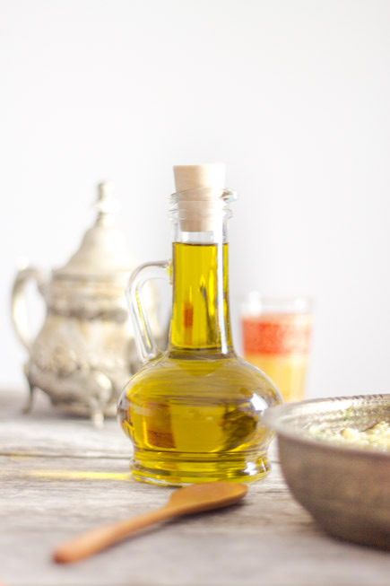

Baba ganoush

Aujourd’hui je vous propose la recette du baba ganoush que vous pouvez aussi rencontrer sous l’appellation moutabal, mtabal, muttabal selon les endroits où vous vous trouvez…
Version orientale de notre caviar d’aubergines, le baba ganoush est une purée d’aubergines délicieusement mêlée à de la crème de sésame (tahine), du citron, de l’ail ainsi que de l’huile d’olive. En Palestine, au Liban, mais aussi en Grèce ou encore en Turquie le baba ganoush (on l’appellera communément comme ça^^) est très souvent servi en mezzé et traditionnellement accompagné de pain pita. Ces multitudes d’appellations viennent de la différence de composition qu’il existe (ou plutôt de dosage des ingrédients) et aussi de leurs « origines ». Par exemple le mtabal contient généralement du yaourt (et je vous conseille cette version car c’est absolument délicieux!) , d’autres mettent plus ou moins de tahini (crème de sésame) mais tout ça n’est qu’une question de goût et c’est à chaque fois sensiblement la même chose. Le baba ganoush est généralement servi en entrée ou en apéritif au Moyen-Orient, mais ce qui est aussi très bon de faire c’est de l’incorporer dans un bon plat de pâtes, de le servir en verrine ou encore en accompagnement de vos viandes c’est vraiment vraiment divin. Nous on est absolument fans et en été c’est juste parfait! Frais, parfumé, délicieux.
Je vous laisse maintenant avec la recette et j’espère qu’elle vous plaira!!
Ingrédients
- Aubergines - 2 grosses
- Ail - 2 gousses
- Huile d'olive - 4 càs
- Tahini - 4 càs
- Citron - 1
Instructions
- Déposer les aubergines sur une plaque allant au four
- Mettre sur four sur la fonction grill et enfourner les aubergines
- Retournez-les régulièrement pour que les aubergines ne crament pas trop
- Dans ma recette j'ai mis 20 minutes de cuisson mais la cuisson va dépendre de la taille de vos aubergines, de votre four alors pensez à surveiller la cuisson régulièrement
- Quand les aubergines ont flétri et que la peau commence à se détacher vous pouvez les sortir du four
- Attendre qu'elles refroidissent
- Prélever la chair des aubergines à l'aide d'une cuillère et réduisez-la en purée
- Ajouter l'huile d'olive et la crème de sésame et mélanger
- Presser les gousses d'ail et ajoutez-les au mélange
- Presser le citron
- Verser petit à petit le jus de citron et goûter au fur et à mesure
- Mélanger pour obtenir une consistance homogène
- Verser le mélange dans un bol ou une grande assiette creuse
- Placer au frais et arroser d'huile d'olive
- Tremper des morceaux de pain pita grillé, des dips de légumes ou incorporez-le à une de vos recettes c'est divin!

Les tips de la communauté
Recette découverte et appréciée, comparée favorablement au caviar d'aubergines. Commentaires positifs sur la simplicité et l'équilibre du plat. Tahini mentionné comme crucial pour les saveurs. Photos superbes. Plusieurs suggestions d'améliorations et d'utilisations (apéro, accompagnement).
Astuces
- Le tahini (crème de sésame) est crucial pour le goût - respecter les quantités
- Se trouve dans les magasins bio, hypermarchés (rayon cuisine du monde), ou boutiques orientales
- Excellent pour l'apéro avec des tortillas chips ou du pain pita
- Peut compacter au réfrigérateur - à température ambiante, il retrouve une meilleure texture
Variantes suggérées
- Ajouter une tomate coupée en dés et bien écrasée à la fourchette (lisse les saveurs pour ceux qui n'aiment pas le tahini)
- Pincée de sumac en finition pour plus d'intensité
Ajustements signalés
- absolument mettre la quantité nécessaire de Tahiné si non le goût est fade.
- que je teste vite, bientôt !